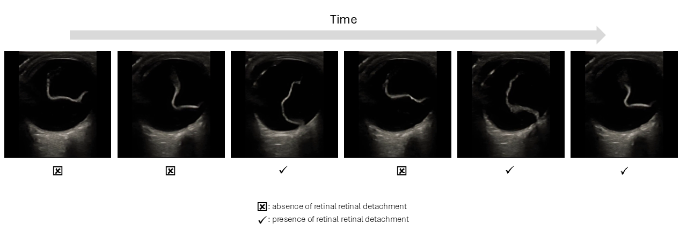
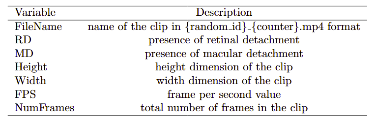
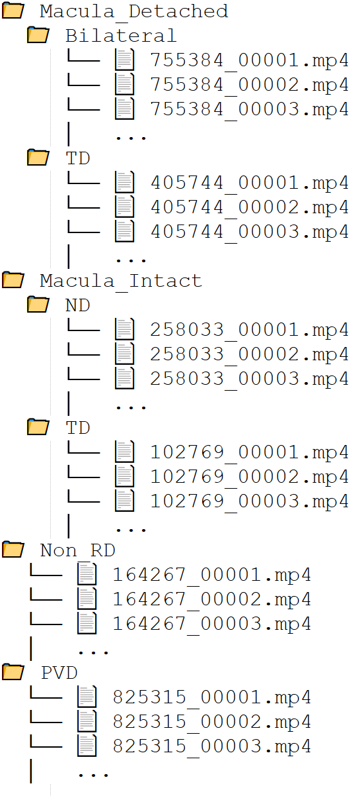
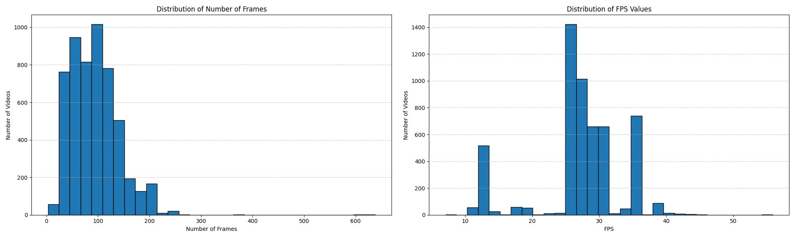

Ocular ultrasonography, or B-scan ultrasound, is a fast, accessible, and non-invasive imaging tool widely utilized to assess the posterior segment of the eye, especially in the presence of media opacities like cataracts or vitreous hemorrhage. It plays a pivotal role in diagnosing and guiding the treatment of various retinal conditions, including retinal and macular detachment. To enable further exploration and development of computer vision techniques in this critical domain, we introduce Eye Retinal DEtachment UltraSound, ERDES-3D, a comprehensive video dataset of ocular ultrasound scans. ERDES-3D includes 5406 labeled 3D ultrasound video clips, each annotated by human experts for the presence of retinal and macular detachments, providing a rich resource for robust analysis of detachment patterns and classification tasks.
Despite significant advances in machine learning for medical images, video-based analysis in the biomedical domain remains under-explored due to the limited availability of well-annotated medical video datasets. Medical videos, such as ocular ultrasound scans, are an integral part of clinical practice, yet their potential for AI-driven diagnostics and classification remains largely untapped. Open-access datasets have been instrumental in advancing computer vision for images; extending this collaborative environment to videos promises to accelerate progress and create robust, clinically relevant models. ERDES-3D addresses this gap by offering an openly available, expertly annotated dataset of ocular ultrasound videos. We also provide baseline performance benchmarks using a 3D convolutional neural network architecture to detect and classify retinal and macular detachment, setting the stage for further development and collaboration in this field.

Ocular Videos: The ERDES-3D dataset comprises 5406 ocular B-scan ultrasound videos, each providing dynamic cross-sectional views of the eye's posterior segment. These videos were acquired during routine clinical care at University of Arizona between [START_YEAR] and [END_YEAR]. To ensure patient privacy and data standardization, all videos were meticulously processed to remove any identifying overlays. Capturing both normal and pathological findings, the dataset covers a wide range of typical imaging scenarios, thereby offering a comprehensive resource that reflects clinical variability and supports robust analysis of retinal and macular detachments.

Annotations: Each video clip is accompanied by expert-labeled annotations indicating the presence or absence of retinal detachment and macular involvement. These labels were determined by experienced ophthalmologists following a standardized clinical workflow. Annotations serve as a foundation for supervised learning and enable benchmarking of new computer vision approaches for video-based classification in ophthalmology.
The ocular ultrasound video clips are categorized into three principal groups: Normal, Retinal Detachment (RD), and Posterior Vitreous Detachment (PVD). Within the Retinal Detachment category, the clips are further subdivided based on the status of the macula—specifically, whether the macula is detached or remains intact.
This structured classification helps in systematically analyzing and interpreting the retinal pathologies present in the ultrasound data. You can see the structure of dataset folders in the below figure which reflect the labeling protocole

Data Preprocessing: We meticulously removed all patient health information and extraneous annotations present on the lateral sides of the ocular ultrasound clips. To achieve this, we employed a YOLO (You Only Look Once) object detection model trained specifically to identify and localize the globe of the eye within each video frame. The model was trained using a small set of manually annotated example frames, where the bounding boxes encompassed only the globe region, excluding peripheral areas that do not contribute to the diagnosis of retinal or macular detachment. By leveraging YOLO’s fast and accurate detection capabilities, we ensured that the region of interest (ROI) — the globe — was consistently identified throughout the entire clip. Subsequently, each frame in the video was cropped according to the detected bounding box, resulting in a refined dataset comprising only the relevant anatomical features for analysis. All video clips in the dataset are in mp4 format, optimized for further diagnostic tasks.

You can download the dataset using the provided Google Drive link.
Our code is made publically available under PCVLab's github repository here. Please consider starring the repo.
A Benchmark Dataset for Retinal Detachment Classification in 3D Ocular Ultrasound.
Pouyan Navard, Yasemin Ozkut, Srikar Adhikari, Alper Yilmaz. Nature Scientific Data (2025)
Note: If you intend to use ERDES-3D dataset in your research please cite our work using this bibliography
@inproceedings{navardocular,
title={A Benchmark Dataset for Retinal Detachment Classification in 3D Ocular Ultrasound},
author={Navard, Pouyan and Ozkut, Yasemin and Adhikari, Srikar and Yilmaz, Alper},
booktitle={Nature Scientific Data},
pages={4981--4988},
year={2025}
}
For inquiries, contact us at boreshnavard [dot] 1 [at] osu [dot] edu.
Design and source code of this website was taken from here.